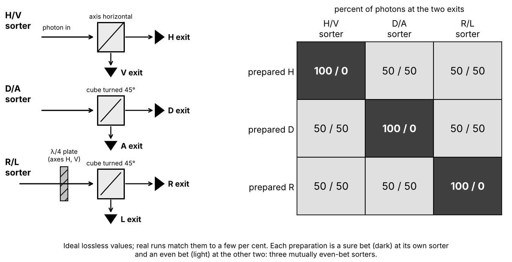

Nature has three polarization sorters that are mutually even bets (each one's sure-bet states are 50/50 at the other two), and an arrow made of one real number per exit allows at most two such sorters; that is the shortest experimental route to the $i$, and a three-slit experiment is the shortest route to the 2. In one line each: the amplitude must be at least a pair of real numbers (a clock hand with a length and a direction) because nature has three mutually even-bet sorters (horizontal/vertical, diagonal/anti-diagonal, and the two circular polarizations) and a single real number per exit allows at most two; the pair nature uses combines like complex numbers, since the quarter-period delay that a real crystal slab performs on one component acts as the quarter turn of a hand that multiplying by $i$ gives; and we can tell the chance is the squared length because the square of a sum contains single and pair pieces only, so for ideal slits that each send the same wave whatever the others do, three slits show no interference beyond what pairs show, while the plain size, the cube and the fourth power all predict a three-way effect at most spots, and experiments bound any three-way leftover below about one per cent of the two-slit stripes. Everything below is algebra with complex numbers written as pairs of reals; every derivation step is on the page; and each argument ends with what it assumes.
Experiment 1: three sorters. Polarization is the direction of the light's electric field across the beam; for linear polarization it is a fixed line, for circular polarization it turns around the beam once per period of the light. The pieces: a heralded single-photon source (a crystal that emits photons in pairs, so that catching one announces that a partner is almost certainly on its way; occasionally two pairs are emitted together, which experiments keep rare); a polarizing beam splitter (a cube that sends light polarized along its axis out of one face and light polarized at right angles out of another; with its axis horizontal it sorts H from V, turned by 45° about the beam it sorts diagonal D from anti-diagonal A); a quarter-wave plate (a crystal slab with a fast and a slow axis, which delays the component polarized along the slow axis by a quarter of a period relative to the other; "wave plate" is the generic name, and a half-wave plate delays by half a period). A circular sorter is a quarter-wave plate with its axes along H and V followed by a splitter turned to 45°: it sends the two circular polarizations, call them R and L, to different exits. (Which handedness is called R depends on the convention; nothing below depends on it.) Three preparations: H by a horizontal polarizer; D by a polarizer at 45°; R by a polarizer at 45° followed by the quarter-wave plate. Each prepared photon is sent into one of the three sorters and counted at its exits. Idealizations: lossless optics, perfect detectors, one wavelength, single pairs; real elements leak a few per cent into the wrong exit.
What is observed, as fractions at the two exits:
| prepared as | H/V sorter | D/A sorter | R/L sorter |
|---|---|---|---|
| H | 100 / 0 | 50 / 50 | 50 / 50 |
| D | 50 / 50 | 100 / 0 | 50 / 50 |
| R | 50 / 50 | 50 / 50 | 100 / 0 |
Each photon leaves whole by one exit: with heralded photons, the two detectors of a sorter click together far less often than independent random clicks at the same rates would (Grangier, Roger and Aspect, 1986, with a half-silvered mirror and photon pairs from a calcium atomic cascade: about a fifth of the independent-click rate, the residue attributed to occasional double emissions). The two exits together account for every photon, at every sorter, for every preparation (in the ideal lossless case). Beth (1936) measured the torque that circularly polarized light exerts on a half-wave plate; per photon of energy $hf$ it corresponds to angular momentum $\hbar$ along the beam, with opposite signs for R and L, so R and L are physically distinct states, not two names for one. The spin twin: a spin-½ particle sorted along the $z$, $x$ or $y$ axis (a Stern–Gerlach magnet, which deflects the two spin components into separate beams, pointed along each axis in turn) shows the same table, with $z$, $x$, $y$ in place of H/V, D/A, R/L; sorting one beam after another is the textbook idealization and is realized with neutron and atom polarimeters, where the spin is turned by magnetic fields between a polarizer and an analyser.

Sources: Feynman, Leighton & Sands, The Feynman Lectures on Physics, Vol. III, ch. 11, §11-4 "The polarization states of the photon"; Sakurai & Napolitano, Modern Quantum Mechanics, 3rd ed., §1.1 "The Stern–Gerlach Experiment" (including the analogy with polarized light); Hecht, Optics, 5th ed., ch. 8 "Polarization", the sections on polarizers (Malus's law) and on retarders (wave plates); Beth, Phys. Rev. 50, 115 (1936); Grangier, Roger & Aspect, Europhys. Lett. 1, 173 (1986).
Experiment 2: three slits. A plate with three narrow parallel slits A, B, C, equal in width and equally spaced, with a movable mask that leaves open any chosen subset: eight settings, all blocked, A, B, C, AB, AC, BC, ABC. Light: a faint laser in one series, heralded single photons in another. A single-photon detector counts arrivals at a chosen spot on the far side; the counting is repeated at several spots; the all-blocked count (stray light, detector noise) is subtracted. Sinha, Couteau, Jennewein, Laflamme and Weihs did this in 2010. Observed: (1) every detection is one click; the pair settings show two-slit stripes as the detector is moved; the three-slit setting shows a different striped pattern. (2) At each spot, add the three pair counts, subtract the three single counts, and compare with the three-slit count. The difference, call it the leftover (the third-order interference term), was consistent with zero at every spot, with a total uncertainty that bounds any real leftover below about one hundredth of the two-slit interference, that is, of the strength of the stripes. An experiment bounds the leftover; it cannot show it to be exactly zero. (3) The same for the faint laser and for single photons. Since then: a five-path interferometer with photons (Kauten et al., 2017, tighter bound) and large molecules (Cotter et al., 2017). Idealizations the analysis uses: lossless optics, and each slit sending the same wave whether or not its neighbours are open (the fine print in Model 2 says how good that is).
![Ideal far-screen (Fraunhofer) patterns for three equal slits of width w and spacing d = 4w, each slit's wave taken as independent of the others, in units where one slit gives 1 at the centre; x is measured in A+B stripe spacings. Every curve is shown only within the central band of the single-slit envelope, whose first zero is at x = ±4 with fainter side bands beyond the window. Top: the three single slits coincide. Middle: A+B and B+C are identical (stripes one unit apart), A+C has stripes half a unit apart, all three reach 4 at the centre. Bottom: all three open reaches 9 at the centre; between neighbouring tall stripes there is a weak stripe (about 0.95 next to the centre, smaller further out) with zeros a third and two thirds of the way between them; the tall stripes shrink away from the centre, so those at x = ±3 (about 0.8) are lower than the weak stripe at x = ±1/2. What to notice: the three-slit curve is not the pair curves added, yet at every x it equals (pairs added) − (singles added).](figures/c-three-slit-patterns.png)
Sources: Sinha, Couteau, Jennewein, Laflamme & Weihs, Science 329, 418 (2010); Kauten et al., New J. Phys. 19, 033017 (2017); Cotter et al., Sci. Adv. 3, e1602478 (2017); Hecht, Optics, 5th ed., ch. 10 "Diffraction", §10.2 (Fraunhofer diffraction, multiple slits).
What the classical candidates say, and which observation kills each. A classical light wave has circular polarization (two field components a quarter period apart) and passes the whole 100/50/50 table, as fractions of the wave's energy; it also passes the three-slit test, because its energy at a spot is the square of the wave height, which is the same square as Model 2. It is killed by whole arrivals: it divides every pulse's energy between a sorter's two exits, so with click-producing detectors the two would click together at least as often as independent random clicks at the same rates; with heralded single photons they click together far less often than that (Grangier, Roger and Aspect, 1986). Tiny balls, each through one slit: the count with two slits open is the two single-slit counts added, whatever the balls do at the slit edges, so opening a second slit could never lower the count anywhere; the pair stripes have dark spots where it does. A rule with one real number per exit: keep the "add amplitudes, then take some power" rule of the two-slit answer but let each amplitude be a single real number, positive or negative. A state is then a unit arrow in a plane, $(\cos\theta, \sin\theta)$, each sorter is a pair of perpendicular directions, and the amplitude for an exit is the arrow's shadow on that exit's direction. The H/V sorter's directions are $(1,0)$ and $(0,1)$, so the shadows are $\cos\theta$ and $\sin\theta$. The D/A sorter's directions are $(1,1)/\sqrt2$ and $(1,-1)/\sqrt2$, so the D shadow is $(\cos\theta+\sin\theta)/\sqrt2$. Under the square rule the D chance is $(\cos\theta+\sin\theta)^2/2 = (\cos^2\theta + 2\sin\theta\cos\theta + \sin^2\theta)/2 = (1+\sin 2\theta)/2$, using $\cos^2\theta+\sin^2\theta = 1$ and $2\sin\theta\cos\theta = \sin 2\theta$. Now ask for a state that is an even bet at both. Even at H/V: $\cos^2\theta = \tfrac12$, so $\cos 2\theta = 2\cos^2\theta - 1 = 0$, so $2\theta = 90°$ or $270°$, so $\theta = 45°$ or $135°$ (other solutions differ by $180°$ and are the same arrow reversed). Even at D/A: $(1+\sin 2\theta)/2 = \tfrac12$, so $\sin 2\theta = 0$. But at $2\theta = 90°$ or $270°$, $\sin 2\theta = +1$ or $-1$, not $0$: the arrow that is even at H/V is a sure bet at D/A (it is D or A), never an even bet. So one real number per exit allows at most two mutually even-bet sorters, and the table shows three (H is even at D/A and at R/L; D is even at H/V and at R/L; R is even at both linear sorters). The conclusion does not depend on the square. It needs only that the chance grows with the size of the shadow and is the same for a shadow and its negative: then "even bet" means both shadows have one particular size $s_0$; at H/V that gives $|\cos\theta| = |\sin\theta| = s_0$, so $s_0 = 1/\sqrt2$; but then the D shadow $(\cos\theta+\sin\theta)/\sqrt2$ is $0$ or $\pm1$, never of size $1/\sqrt2$. What survives: a pair of real numbers per exit, a hand with a direction as well as a length, as Model 1 shows. (This argument does not touch particle models with hidden pointers; for a single two-exit system such models can be tuned to any table, and it is Bell tests on pairs that constrain them.)
![Left: one real number per exit. The H-exit chance cos²θ equals 1/2 only at θ = 45° and 135° (circles), the D-exit chance cos²(θ − 45°) only at 0°, 90° and 180° (squares), so no real arrow is an even bet at both sorters. Right: the Poincaré sphere, a picture of Model 1's two-component complex states (one point per state, opposite points perfectly distinguishable): the real arrows form the H–D–V–A circle, the states that are even bets at H/V form the D–A–R–L circle, those even at D/A form the H–V–R–L circle, and the two even-bet circles cross only at R and L, which lie off the real-arrow circle.](figures/c-three-fifty-fifty.png)
Sources: Dirac, The Principles of Quantum Mechanics, 4th ed., ch. I, §2 "The polarization of photons"; Sakurai & Napolitano, 3rd ed., §1.1 (the argument that the $y$-axis spin states need complex coefficients); Hecht, Optics, 5th ed., ch. 8, the section on circular polarization; Grangier, Roger & Aspect (1986), above.
Model 1: two-component complex state vectors (standard quantum mechanics for a two-exit system). Intuition. A complex number $z = x + iy$ is a pair of reals, a hand of length $|z| = \sqrt{x^2+y^2}$ pointing at the angle whose cosine is $x/|z|$ and whose sine is $y/|z|$; multiplying by $i$ turns the hand a quarter turn, since $i(x+iy) = -y + ix$ sends the point $(x,y)$ to $(-y,x)$. The state is a pair of complex numbers $(s_1, s_2)$ with $|s_1|^2+|s_2|^2 = 1$, one hand per H/V exit: $H = (1,0)$, $V = (0,1)$, $D = (1,1)/\sqrt2$, $A = (1,-1)/\sqrt2$, $R = (1,i)/\sqrt2$, $L = (1,-i)/\sqrt2$. An exit $e = (e_1,e_2)$ is itself such a state (the one that takes that exit for sure), and the amplitude for state $s$ to take exit $e$ is the overlap $\langle e|s\rangle = \bar e_1 s_1 + \bar e_2 s_2$, where the bar means reversing the sign of the imaginary part ($\overline{x+iy} = x-iy$); the chance is $|\langle e|s\rangle|^2$. The quarter-wave plate with slow axis along V is the matrix $Q = \begin{pmatrix}1&0\\0&i\end{pmatrix}$: it leaves the H component alone and multiplies the V component by $i$, a quarter turn of that hand, which is literally what a quarter-period delay does to a component oscillating at the light's frequency (in the usual sign convention; the other convention gives $-i$ and swaps the names R and L). So $QD = (1, i)/\sqrt2 = R$, which is how R is prepared, and $QR = (1, i\cdot i)/\sqrt2 = (1,-1)/\sqrt2 = A$, $QL = (1, -i\cdot i)/\sqrt2 = (1,1)/\sqrt2 = D$, which is why a plate followed by a 45° splitter sorts R from L.
The table, derived. $\langle H|R\rangle = 1\cdot\tfrac{1}{\sqrt2} + 0 = \tfrac{1}{\sqrt2}$, chance $\tfrac12$. $\langle D|R\rangle = \tfrac{1}{\sqrt2}\cdot\tfrac{1}{\sqrt2} + \tfrac{1}{\sqrt2}\cdot\tfrac{i}{\sqrt2} = \tfrac{1+i}{2}$, chance $|\tfrac{1+i}{2}|^2 = \tfrac{1^2+1^2}{4} = \tfrac12$. $\langle A|R\rangle = \tfrac{1-i}{2}$, chance $\tfrac12$. $\langle R|R\rangle = \tfrac{1}{\sqrt2}\cdot\tfrac{1}{\sqrt2} + \overline{\tfrac{i}{\sqrt2}}\cdot\tfrac{i}{\sqrt2} = \tfrac12 + \tfrac{(-i)(i)}{2} = \tfrac12+\tfrac12 = 1$. $\langle L|R\rangle = \tfrac12 + \tfrac{\overline{(-i)}\, i}{2} = \tfrac12 + \tfrac{i\cdot i}{2} = \tfrac12 - \tfrac12 = 0$: R never takes the L exit, so R and L are perfectly distinguishable even though each is an even bet at both linear sorters. Every row of the table follows the same way. The two exits of any sorter total 1 for every state: for R/L, $\langle R|s\rangle = (s_1 - is_2)/\sqrt2$ and $\langle L|s\rangle = (s_1 + is_2)/\sqrt2$, so the two chances add to $\tfrac12|s_1 - i s_2|^2 + \tfrac12|s_1 + i s_2|^2$. Expanding with $|z|^2 = z\bar z$: $|s_1 - is_2|^2 = (s_1 - is_2)(\bar s_1 + i\bar s_2) = |s_1|^2 + |s_2|^2 + i s_1\bar s_2 - i\bar s_1 s_2$, and $|s_1 + is_2|^2 = (s_1 + is_2)(\bar s_1 - i\bar s_2) = |s_1|^2 + |s_2|^2 - i s_1\bar s_2 + i\bar s_1 s_2$; the cross terms cancel, leaving $\tfrac12\cdot 2(|s_1|^2+|s_2|^2) = 1$. This is Pythagoras for complex pairs, and it is where the square first earns its place.
Picture. Every state is a point on a sphere (the Poincaré sphere for light, the Bloch sphere for spin): H and V at the two ends of one axis, D and A of a second, R and L of a third; the real arrows $(\cos\theta,\sin\theta)$ fill the great circle through H, D, V, A; a sorter's two exits are two opposite points, and the states that are even bets at it form the great circle midway between them. The two even-bet circles of the linear sorters cross at R and L, off the real circle: that is the figure above, and it is the whole "why $i$" for one system.
Why this model. One rule gives the entire table, the whole arrivals (one exit per photon, chances from the state), the quarter-wave plate's action and Beth's two distinct circular states. Pros: the same two-vector describes spin-½, the two paths of an interferometer and a qubit; the sphere makes basis choice visible. Cons: the square is a postulate here (Born, 1926); and "complex" has a precise but modest meaning: any complex-amplitude theory can be rewritten with twice as many real numbers plus one fixed rule pairing them (Stueckelberg, 1960), so for a single system "needs complex numbers" means exactly this: one real number per exit is too few, and the pairing rule nature uses is complex multiplication, with the quarter-period delay as the quarter turn.
![The H hand (top row) and V hand (bottom row) of each state, drawn in separate complex planes, with the chances at the three sorters computed from Model 1 beneath. Left: D = (1, 1)/√2, both hands pointing right with length 0.707. Middle: after one quarter-wave plate, R = (1, i)/√2, the V hand turned a quarter turn to point up. Right: after a second plate, A = (1, −1)/√2, the V hand pointing left. What to notice: no hand changes length, only the V hand's direction changes, and that alone moves the sure bet from the D exit to the R exit to the A exit.](figures/c-quarter-wave-hands.png)
Sources: Feynman III, ch. 11, §11-4; Griffiths & Schroeter, Introduction to Quantum Mechanics, 3rd ed., §1.2 "The Statistical Interpretation" and §4.4.1 "Spin ½" (spin states along $x$ and $y$; those along $y$ are $(1,\pm i)/\sqrt2$); Sakurai & Napolitano, 3rd ed., §1.1 and §1.4 "Measurements, Observables, and the Uncertainty Relations"; Hecht, Optics, 5th ed., ch. 8, the section on the mathematical description of polarization (Jones vectors); Born, Z. Phys. 37, 863 (1926); Stueckelberg, Helv. Phys. Acta 33, 727 (1960).
Model 2: amplitudes for alternatives, and the square of a sum (why 2, from the three-slit test). Let the hands arriving at one spot from slits A, B, C be $a$, $b$, $c$ (complex), with the idealization that each is the same whatever the other slits do. The square rule says $P_{ABC} = |a+b+c|^2$, $P_{AB} = |a+b|^2$ and so on, $P_A = |a|^2$. Expand, using $|z|^2 = z\bar z$ and $\overline{u+v} = \bar u + \bar v$: $$|a+b+c|^2 = (a+b+c)(\bar a+\bar b+\bar c) = a\bar a + b\bar b + c\bar c + (a\bar b + b\bar a) + (a\bar c + c\bar a) + (b\bar c + c\bar b).$$ Each bracket is a number plus its own conjugate, $a\bar b + \overline{a\bar b} = 2\,\mathrm{Re}(a\bar b)$, where Re is the real part (the hand's horizontal component). So $$P_{ABC} = |a|^2+|b|^2+|c|^2 + 2\mathrm{Re}(a\bar b) + 2\mathrm{Re}(a\bar c) + 2\mathrm{Re}(b\bar c),$$ nine terms, each involving one slit or two, none involving three. The same expansion with two slits gives $P_{AB} = |a|^2+|b|^2+2\mathrm{Re}(a\bar b)$, and likewise for AC and BC. Add the three pair chances: $2(|a|^2+|b|^2+|c|^2) + 2\mathrm{Re}(a\bar b)+2\mathrm{Re}(a\bar c)+2\mathrm{Re}(b\bar c)$. Subtract the three singles: $|a|^2+|b|^2+|c|^2 + 2\mathrm{Re}(a\bar b)+2\mathrm{Re}(a\bar c)+2\mathrm{Re}(b\bar c)$, which is $P_{ABC}$ exactly. So the leftover $$I_3 = P_{ABC} - P_{AB} - P_{AC} - P_{BC} + P_A + P_B + P_C = 0$$ at every spot, for any three hands, at any screen distance. That is the measured null. Now the other powers, chance $= |\text{total}|^p$, at three sample spots (the hands in relative units; the third column has a genuinely sideways hand):
| power $p$ | hands $(1, 1, -1)$ | hands $(1,1,1)$ | hands $(1, i, -1)$ |
|---|---|---|---|
| $P_{ABC}$ | $1^p = 1$ | $3^p$ | $|i|^p = 1$ |
| $P_{AB}+P_{AC}+P_{BC}$ | $2^p + 0 + 0$ | $3\cdot 2^p$ | $(\sqrt2)^p + 0 + (\sqrt2)^p$ |
| $P_A+P_B+P_C$ | $3$ | $3$ | $3$ |
| $I_3$, $p=1$ (plain size) | $1-2+3 = 2$ | $3-6+3 = 0$ | $4 - 2\sqrt2 \approx 1.17$ |
| $I_3$, $p=2$ (square) | $1-4+3 = 0$ | $9-12+3 = 0$ | $1-4+3 = 0$ |
| $I_3$, $p=3$ | $1-8+3 = -4$ | $27-24+3 = 6$ | $4 - 2\cdot 2^{3/2} \approx -1.66$ |
| $I_3$, $p=4$ | $1-16+3 = -12$ | $81-48+3 = 36$ | $1-8+3 = -4$ |
The plain size passes at a few special spots and fails elsewhere: it passes where all hands line up (there it is just lengths added) and where three equal hands cancel completely, as at the three-slit dark spots a third and two thirds of the way between stripes (hands $(1,\omega,\omega^2)$ with $\omega$ a third of a turn: $P_{ABC} = 0$, each pair sum has length 1, so $I_3 = 0 - 3 + 3 = 0$); and its leftover is never negative (an inequality due to Hlawka). The cube and the fourth power fail even at the centre. The reason is the one the expansion shows. For $p = 4$, $|a+b+c|^4 = (|a+b+c|^2)^2$ is the square of the nine-term sum, and multiplying it out produces products such as $|a|^2\cdot 2\mathrm{Re}(b\bar c)$ and $2\mathrm{Re}(a\bar b)\cdot 2\mathrm{Re}(a\bar c)$ in which all three hands appear; for $p=3$, $(|a+b+c|^2)^{3/2}$ is not a sum of single and pair pieces at all, and neither is the plain size $(|a+b+c|^2)^{1/2}$. No single or pair run can measure a piece that needs all three slits open. Sorkin (1994) put this as a hierarchy: classical chances have no interference, a rule of degree 2 has two-way interference and nothing beyond, a rule of degree $p$ has interference up to order $p$. A zero leftover is, among power rules, the signature of exactly the square; the measured absence of third-order interference, to one part in a hundred of the second-order stripes, pins the exponent near 2 rather than exactly at it (powers very close to 2 would give leftovers below the present bound).
Why this model and what it assumes. Two-way interference present (the pair stripes) and three-way interference absent is what the square predicts and no other plain power does, and that prediction is independent of slit shape, wavelength and distance. Pros: it turns "why 2?" into a number that is measured, and "pair pieces only" is a bookkeeping fact worth having: for $N$ alternatives the chance is $N$ single terms plus $N(N-1)/2$ pair terms and nothing more. Cons: it shows the world has the square's signature, not why; and the clean zero needs independent slit hands. The fine print: real slits are not independent, because a wave can also take looped routes (in at A, back out through B, in again at C), so the square rule applied to real slits predicts a small nonzero leftover, calculated with the sum over paths by Sawant et al. (2014) and far below the 2010 precision for ordinary slits; in a set-up built to strengthen the loops (slits in a thin metal film whose surface carries light between them) a leftover was measured in 2016, consistent with that calculation. The exact statement: with independent hands the square rule says zero; for real slits it says small but not zero; both are the square rule.
![The leftover I₃ = P_ABC − P_AB − P_AC − P_BC + P_A + P_B + P_C across the screen for chance = |amplitude|^p, same ideal far-screen geometry and independent slits as above, one slit = 1 at the centre. Only p = 2 is zero everywhere (to rounding). The plain size, p = 1, is never negative and touches zero only at isolated spots (circles): the stripe centres, where the three hands line up, and the three-slit dark spots at 1/3 and 2/3, where three equal hands cancel. The cube and the fourth power swing between positive and negative, reaching 6 and 36 at the centre. The measured bound on any real leftover is about 0.01 of the stripe strength.](figures/c-three-slit-leftover.png)
Sources: Feynman III, ch. 3 "Probability Amplitudes", §3-1 "The laws for combining amplitudes"; Feynman, QED, ch. 2 (the arrows); Sorkin, Mod. Phys. Lett. A 9, 3119 (1994); Sinha et al. (2010), above; Sawant, Samuel, Sinha, Sinha & Sinha, Phys. Rev. Lett. 113, 120406 (2014); Magaña-Loaiza et al., Nat. Commun. 7, 13987 (2016).
Model 3: the structural theorems (established mathematics about such rules). Only among powers, and the fix. "Two exits total 1 only for the square" is true among powers, not among all rules. Take a real shadow $x$ and the rule $f(x) = x^2 + \varepsilon\, x^2(1-x^2)(2x^2-1)$ with any $|\varepsilon|<1$. For an arrow $(\cos\theta,\sin\theta)$ write $x = \cos\theta$, $y = \sin\theta$, $x^2+y^2 = 1$. Then $f(x)+f(y) = x^2+y^2 + \varepsilon\,x^2y^2\,[(2x^2-1)+(2y^2-1)] = 1 + \varepsilon\,x^2y^2\,[2(x^2+y^2)-2] = 1 + 0 = 1$ for every $\theta$; also $f(0)=0$, $f(1)=1$, $f(1/\sqrt2) = \tfrac12$, and $f \ge 0$ because $(1-x^2)(2x^2-1)$ lies between $-1$ and $\tfrac18$ for $0 \le x \le 1$. So with two exits the requirement that the chances total 1 does not fix the rule, and the 100/50/50 table does not either, since the wiggle agrees with the square at shadows $0$, $1/\sqrt2$ and $1$. Only sorters at intermediate angles see it: an H photon at a splitter turned by $30°$ takes the first exit with chance $f(\cos 30°)$, which is $\cos^2 30° = 0.75$ for the square and $0.75 + 0.094\,\varepsilon$ with the wiggle (since $x^2 = \tfrac34$ gives $\varepsilon\cdot\tfrac34\cdot\tfrac14\cdot\tfrac12$). Such measurements (Malus's law) bound $\varepsilon$ to small values; that is a measurement, not a consistency argument. Three exits kill it by consistency alone: for the state $(1,1,1)/\sqrt3$, each shadow is $1/\sqrt3$, $x^2 = \tfrac13$, $f = \tfrac13 + \varepsilon\cdot\tfrac13\cdot\tfrac23\cdot(\tfrac23-1) = \tfrac13 - \tfrac{2\varepsilon}{27}$, and the three chances total $1 - \tfrac{2\varepsilon}{9} \ne 1$ unless $\varepsilon = 0$. Gleason's theorem (1957) is the general form: in a state space with three or more perpendicular directions, if each outcome's chance depends only on the state and that outcome's own direction (not on which other outcomes are sorted alongside it: non-contextuality), and chances over every complete perpendicular set total 1, then the chance is a weighted average of squared shadows, the weights being those of a mixture (defined next); adding that a state is a sure bet at its own direction picks out the squared shadow of that one state. Any rule at all is excluded, not just powers. For two-exit systems the theorem does not apply; Busch (2003) recovers it there once imperfect sorters (generalized measurements) are included among the measurements the rule must cover.
States you don't fully know, and why pairs of reals (the $i$ for composite systems). A beam of unknown preparation, say H with chance $q$ and R with chance $1-q$, is a mixture. Everything measurable about a two-exit mixture is fixed by three numbers, its average lean at the three sorters, $(P_H - P_V,\ P_D - P_A,\ P_R - P_L)$: a point inside the sphere (a pure state has a lean of length 1 and sits on the surface; the mixture above sits at $q\,(1,0,0) + (1-q)\,(0,0,1)$, which is inside). The table of numbers that fixes every chance for a system of unknown preparation is called its density matrix; for one two-exit system it amounts to this point in the ball. Wootters (1990) noticed what a real-amplitude theory would get wrong for two systems, by counting such numbers. One complex two-exit system: 3. One real two-exit system: 2 (no circular sorter exists, so a point in the disc inside the real circle). A pair of complex systems: the density matrix is a $4\times4$ table of complex numbers that equals its own mirror image across the diagonal with the imaginary parts sign-flipped (4 real diagonal entries plus 6 complex entries above the diagonal, $4 + 12 = 16$ real numbers) with the diagonal totalling 1, so $16 - 1 = 15$ free numbers; and local experiments supply exactly 15: each side's 3 leans, plus the 9 correlations (the average product of the two sides' $\pm1$ results, one for each pairing of their three sorters), $3+3+9 = 15$. A pair of real systems: a $4\times4$ symmetric table of real numbers (4 diagonal plus 6 above, 10) with diagonal totalling 1, $10 - 1 = 9$ free numbers; but local experiments supply only $2+2+4 = 8$. One number of the pair's state would be invisible to every measurement on the parts and their correlations, and could be seen only by a sorter acting on the pair as a whole; in complex quantum mechanics the state of a pair is fixed by what the parts and their correlations show, a property called local tomography. Renou et al. (2021) turned this into a test: in a network with two independent sources and three parties, a theory with real amplitudes and the standard rule that independent sources give product states scores at most 7.66 on a Bell-type combination of counts (their computed bound; not one to check by hand here), while complex quantum mechanics predicts up to $6\sqrt2 \approx 8.49$. Two 2022 experiments, one with photons (Li et al.) and one with superconducting qubits (Chen et al.), exceeded 7.66 by many standard deviations. Caveats: the tests assume the two sources are independent, are not loophole-free, and exclude real amplitudes with the product rule for independent systems, not every conceivable real reformulation.
| what | complex amplitudes | one real number per amplitude |
|---|---|---|
| mutually even-bet sorters for one two-level system | 3 | 2 |
| state parameters, one system | 3 | 2 |
| state parameters, a pair | 15 | 9 |
| parameters the parts and their correlations can reveal | 3+3+9 = 15 | 2+2+4 = 8 |
| network score bound | up to $6\sqrt2 \approx 8.49$ | at most 7.66 |
Why these results and their limits. Consistency across all sorters and all groupings fixes the exponent, given Gleason's assumptions; it does not fix the pairing. A theory with one real number per amplitude is self-consistent, and so is one with four (quaternions); what selects the complex pair is experiment plus extra assumptions: the three-sorter table excludes one real number per exit, the network tests exclude real amplitudes together with the product rule for independent sources, and quaternion versions, which would allow up to five mutually even-bet sorters for a two-exit system, have been searched for with neutron and photon interferometers with no sign so far (not covered here). Pros: Gleason reduces the square to weaker assumptions; the counting shows what the $i$ buys for pairs, and the network test measures it. Cons: non-contextuality and "sure bet at its own direction" are assumptions, and the arrow-and-directions structure is taken as given; the network bound cannot be checked by hand at this level, and its loopholes are open.
![Left: the rule f(x) = x² + εx²(1 − x²)(2x² − 1) against the shadow x for ε = 0 (the square), +0.8 and −0.8; all three pass through (0, 0) and (1, 1) and cross at x = 1/√2, where f = 1/2. Middle: with two exits the total f(cos θ) + f(sin θ) is exactly 1 for every arrow angle θ and all three ε. Right: with three exits the total along the path from (1, 0, 0) to (1, 1, 1)/√3 drifts to 1 − 2ε/9 (0.822 for ε = +0.8, 1.178 for ε = −0.8) unless ε = 0. What to notice: a non-power wiggle survives two exits and dies with three.](figures/c-wiggle-rule.png)
Sources: Gleason, J. Math. Mech. 6, 885 (1957); Busch, Phys. Rev. Lett. 91, 120403 (2003); Wootters, "Local accessibility of quantum states", in Zurek (ed.), Complexity, Entropy and the Physics of Information (1990); Hardy & Wootters, Found. Phys. 42, 454 (2012); Aaronson, Quantum Computing since Democritus, ch. 9 "Quantum"; Renou et al., Nature 600, 625 (2021); Li et al., Phys. Rev. Lett. 128, 040402 (2022); Chen et al., Phys. Rev. Lett. 128, 040403 (2022); on quaternions: Kaiser, George & Werner, Phys. Rev. A 29, 2276 (1984); Procopio et al., Nat. Commun. 8, 15044 (2017).
Where the interpretations stand (every position here is contested; all agree on every count above). Copenhagen-style. The square and the complex pairs are postulates; Gleason shows the square is the only consistent choice given the structure. Pro: minimal. Con: critics object that it leaves "measurement" undefined. Many-worlds. Both exits happen, in different branches, so chance must be derived. Zurek's symmetry step (2003–2005) for equal hands, written out. Write $|a\rangle|A\rangle$ for "the photon in state $a$ and its partner in state $A$"; the photon is entangled with the partner in the joint state $(|a\rangle|A\rangle + |b\rangle|B\rangle)/\sqrt2$, the two options each carrying the hand $1/\sqrt2$. Swapping $a \leftrightarrow b$ on the photon alone gives $(|b\rangle|A\rangle + |a\rangle|B\rangle)/\sqrt2$; swapping $A \leftrightarrow B$ on the partner alone then gives $(|b\rangle|B\rangle + |a\rangle|A\rangle)/\sqrt2$, the original state again. If the chances for the photon depend only on the joint state, the first swap exchanged them and the second, which touched only the partner, restored the state without touching the photon; so the chances for $a$ and $b$ must be equal, $\tfrac12$ each. For unequal hands, say $\sqrt{2/3}$ and $\sqrt{1/3}$, the partner's branch $A$ is split into two equally weighted sub-branches so that all three sub-branches have equal hands $1/\sqrt3$, and the equal case gives $\tfrac23$ and $\tfrac13$. Critics (Schlosshauer and Fine, 2005; Barnum et al., 2000, on Deutsch's decision-theoretic version) object that the splitting step assumes that chances add over sub-branches and that equal hands mean equal chances, which is close to what is being derived; supporters reply that these are symmetry requirements, not the rule itself. Pilot-wave. Particles have positions steered by the wave; a cloud of positions spread as $|\psi|^2$ stays so for ever under the steering law (equivariance), while a cloud spread as $|\psi|$ or $|\psi|^4$ does not in general; why the actual cloud is $|\psi|^2$ is argued from typicality (Dürr, Goldstein and Zanghì, 1992) or relaxation (Valentini), and is contested. Objective collapse. The wave localizes at random with chances written as squared sizes in the collapse law (Ghirardi, Rimini and Weber, 1986); Gisin (1989–1990) showed that, given the standard description of entangled pairs, any other weighting would allow faster-than-light signalling, so within these theories the square is forced by no-signalling. Con: new constants, and the predicted small departures have been searched for and not found so far.
![Zurek's swap for equal hands, in three frames. Frame 1: two branches, photon a with partner A and photon b with partner B, each with hand 1/√2. Frame 2: swapping a and b on the photon only gives photon a with partner B and photon b with partner A. Frame 3: swapping A and B on the partner only restores the joint state of frame 1. Because an operation on the partner alone undid the photon swap, the photon's two chances cannot differ: 1/2 each. This is the equal-hands case only; the extension to unequal hands is the contested step.](figures/c-swap-step.png)
Sources: Zurek, Phys. Rev. Lett. 90, 120404 (2003) and Phys. Rev. A 71, 052105 (2005); Schlosshauer & Fine, Found. Phys. 35, 197 (2005); Barnum, Caves, Finkelstein, Fuchs & Schack, Proc. R. Soc. A 456, 1175 (2000); Deutsch, Proc. R. Soc. A 455, 3129 (1999); Wallace, The Emergent Multiverse (2012), Part II; Dürr, Goldstein & Zanghì, J. Stat. Phys. 67, 843 (1992); Valentini & Westman, Proc. R. Soc. A 461, 253 (2005); Ghirardi, Rimini & Weber, Phys. Rev. D 34, 470 (1986); Gisin, Helv. Phys. Acta 62, 363 (1989) and Phys. Lett. A 143, 1 (1990); Bassi et al., Rev. Mod. Phys. 85, 471 (2013); Maudlin, Philosophy of Physics: Quantum Theory (2019), chs. 4–6.
How they relate. Models 1 and 2 are one rule seen twice: the overlap $\langle e|s\rangle$ is a sum of products, the three-slit hand is a sum over routes, and in both the chance is the squared length of a sum, so both contain pair pieces only (the Pythagoras line in Model 1 and the expansion in Model 2 are the same algebra). The sum over paths and the Schrödinger wave function of your earlier answers are the same rule with many directions instead of two. Model 3 is mathematics about such rules: the three-sorter count excludes one real number per exit for one system (two even-bet sorters allowed, three seen); the parameter count and the network test exclude it for pairs, with the caveats stated; the three-slit null pins the degree at 2 among powers, to the measured precision, and Gleason, with non-contextuality and three or more directions, fixes the squared shadow among all rules. The interpretations keep the $i$ and the 2 and every count in both experiments; they differ on what the hand is and what the chance is a chance of, and no experiment has told the first three apart; objective collapse is a slightly changed theory whose departures are still being searched for. The honest status: the three-sorter table is matched to a few per cent and the three-slit leftover is bounded at about one per cent of the stripes; the exponent is fixed by consistency once states are hands and outcomes are directions, given Gleason's assumptions; the complex pairing is selected by experiment together with assumptions such as the product rule for independent sources; and what the hands are is still argued over.
![How the pieces relate. Top: Models 1 and 2 are one rule (chance = squared length of a sum, pair pieces only). Middle: what Model 3 feeds into them: the three sorters exclude one real number per exit for one system; the parameter count and the network test exclude real amplitudes together with the product rule for pairs; the three-slit null (among powers, to the measured precision) and Gleason (among all rules, given its assumptions) fix the exponent at 2. Footer: consistency fixes the 2, given Gleason's assumptions; experiment, with the stated assumptions, selects the complex pairing. Bottom: Copenhagen-style, many-worlds and pilot-wave make the same predictions and differ on meaning; objective collapse (dashed) is a slightly changed law whose departures have not been found so far.](figures/c-map.png)
Sources: Feynman III, ch. 3, §3-1; Sakurai & Napolitano, 3rd ed., §1.4; Bell, Speakable and Unspeakable in Quantum Mechanics, 2nd ed., ch. 20 "Six possible worlds of quantum mechanics"; Maudlin (2019), ch. 3. (Textbooks are cited by chapter and section; page numbers are omitted where not confirmed.)
Check yourself: Is there any pure polarization state, a point on the sphere, that is an even bet at all three sorters at once? Decide from the sphere; then say where unpolarized light, which is 50/50 at every sorter, must sit.